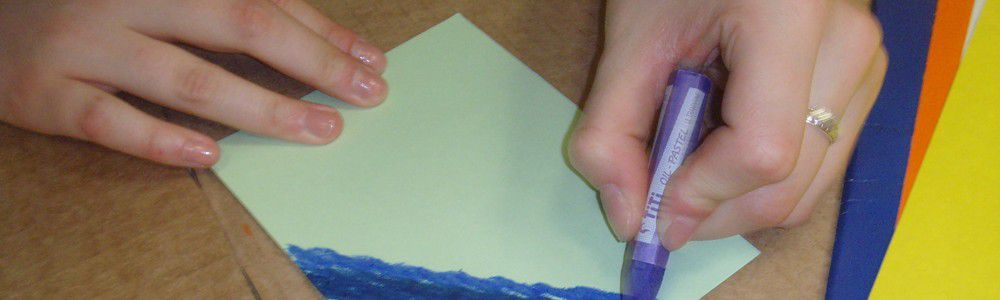

Межрегиональный общественный благотворительный фонд «За здоровое поколение на пороге XXI века»
Главная
Новости
Наш фонд
Наши проекты
Как помочь
Становись волонтером
Полезно знать
Наши проекты

Социально-реабилитационный центр
КИВИ — Клуб Искренних Волонтерских Инициатив
Уютная гостиная
Завершенные проекты
Отчет о деятельности социально-реабилитационного центра